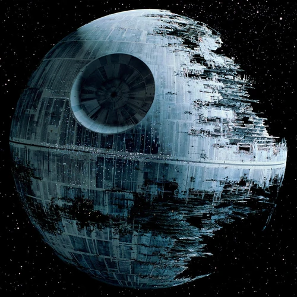

The Death Star

Description
The Death Star mk.II purpose is to terrorize planets and star systems through the use of its planet-destroying super laser.
If that sounds like something you'd wanna do then read further as we'll be making our own planet-destroying, super laser equipped Death Star.
Ingredients
- A moon sized sheet of steel
- A super laser module with 50gigawatt power rating
- Lots, and I mean LOTS, of stormtroopers
- Basic power tools
Preparation Steps
-
Bend your sheet metal into the preferred shape for your Death Star, usually a sphere will do
-
Heat the metal ball by bringing your Death Star to the nearest White Dwarf and holding it there for at least 5 hours
-
After the metal hardens, let it cool down then fill it with storm troopers
Congratulations! You have your own Death Star now! Good luck on your planet-destroying adventures!
Return to Homepage